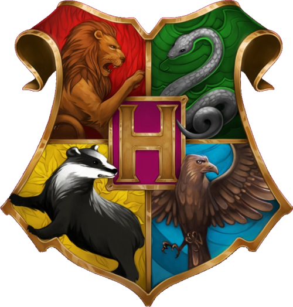

\ Hogwarts houses /
gryffindor
| James Potter | Prongs | Deer |
| Sirius Black | Padfoot | Grim |
| Remus Lupin | Moony | Werewolf |
| Peter Petergrew | Wormtail | Rat |
slytherin
- Captains
- Emma Vanity
- Lucinda Talkalot
- Marcus Flint
- Seekers
- Regulus Black
- Draco Malfoy
hufflepuff
Helga Hufflepuff's Cup was a magical item created by Helga Hufflepuff, one of the founders of Hogwarts School of Witchcraft and Wizardry. It was a small golden cup with two finely-wrought handles with a badger engraved on the side and a few jewels.
ravenclaw

